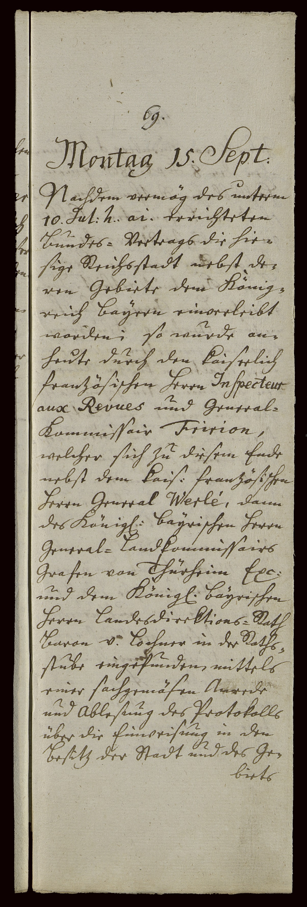

StA Nürnberg, Reichsstadt Nürnberg, Ratsverlässe, 4433, S. 69–70



Kommentar
Editor: magdalena.weileder@textgrid.de
Archiv: StA Nürnberg
Bestand: Reichsstadt Nürnberg, Ratsverlässe
Signatur: 4433, S. 69–70
Ort: Nürnberg
Datum: 1806 September 15
Schlagwort: Amtsbuch
Schwierigkeitsgrad: leicht
Kurzbetreff:
Ratsverlässe der Reichsstadt Nürnberg, Sitzungprotokoll
Ratsverlässe der Reichsstadt Nürnberg, Sitzungprotokoll
Schreiberhände:
- (S1)
Kommentar:
Diese Seiten aus den Ratsverlässen der Reichsstadt Nürnberg enthalten das Protokoll der Sitzung vom 15. September 1806, in der den Ratsmitgliedern nach der am 10. September erfolgten Übernahme der Reichsstadt Nürnberg durch Bayern der Treueid auf den König abgenommen wird.
Die Überschrift ist aus dem Wochentag in Kanzleischrift und dem lateinischen Monatsnamen (Z. 2: Sept(ember)) in humanistischer Kursive zusammengesetzt, auch im weiteren Text werden fremdsprachige Begriffe und Namen in humanistischer Kursive hervorgehoben, während der Haupttext in Kurrent geschrieben ist.
Satzzeichen werden häufig mit dem vorhergehenden Buchstaben verbunden und können deshalb als Buchstaben missverstanden werden. Eine eindeutige Unterscheidung von Groß- und Kleinbuchstabe bei z ist nicht möglich, das c im sch ist verschliffen.
Diese Seiten aus den Ratsverlässen der Reichsstadt Nürnberg enthalten das Protokoll der Sitzung vom 15. September 1806, in der den Ratsmitgliedern nach der am 10. September erfolgten Übernahme der Reichsstadt Nürnberg durch Bayern der Treueid auf den König abgenommen wird.
Die Überschrift ist aus dem Wochentag in Kanzleischrift und dem lateinischen Monatsnamen (Z. 2: Sept(ember)) in humanistischer Kursive zusammengesetzt, auch im weiteren Text werden fremdsprachige Begriffe und Namen in humanistischer Kursive hervorgehoben, während der Haupttext in Kurrent geschrieben ist.
Satzzeichen werden häufig mit dem vorhergehenden Buchstaben verbunden und können deshalb als Buchstaben missverstanden werden. Eine eindeutige Unterscheidung von Groß- und Kleinbuchstabe bei z ist nicht möglich, das c im sch ist verschliffen.
Entzifferung
(Absatz Beginn)
1 69.
2 Montag 15. Sept(ember)(Wechsel des Schriftsystems)
3 Nachdem vermög des unterm
4 10. Jul(i) h(uius) a(nn)i(Wechsel des Schriftsystems) errichteten
5 Bundes= Vertrags die hie-
6 sige Reichsstadt nebst de-
7 ren Gebiete dem König-
8 reich baÿern einverleibt
9 worden; so wurde an-
10 heute durch den kaiserlich
11 französischen Herrn Inspecteur(Wechsel des Schriftsystems)
12 aux Revues(Wechsel des Schriftsystems) und General-
13 Kommissair Fririon(Wechsel des Schriftsystems),
14 welcher sich zu diesem Ende
15 nebst dem kais(erlich) französischen
16 Herrn General Werlé(Wechsel des Schriftsystems), dann
17 des König(lich) baÿrischen Herrn
18 General= Landkommissairs
19 Grafen von Thürheim Exc(ellenz)
20 und dem König(lich) baÿrischen
21 Herrn Landesdirektions=Rath
22 Baron v(on) Lochner in der Raths-
23 stube eingefunden, mittels
24 einer sachgemäsen Anrede
25 und Ablesung des Protokolls
26 über die Einweisung in den
27 Besitz der Stadt und des Ge-
28 biets
(Absatz Ende)
Transkription
(Absatz Beginn)
1 69.
2 Montag, 15. September(Wechsel des Schriftsystems)
3 Nachdem vermög des unterm
4 10. Juli huius anni(Wechsel des Schriftsystems) errichteten
5 Bundesvertrags die hie-
6 sige Reichsstadt nebst de-
7 ren Gebiete dem König-
8 reich Baÿern einverleibt
9 worden, so wurde an-
10 heute durch den kaiserlich
11 französischen Herrn Inspecteur(Wechsel des Schriftsystems)
12 aux Revues(Wechsel des Schriftsystems) und General-
13 kommissair Fririon(Wechsel des Schriftsystems),
14 welcher sich zu diesem Ende
15 nebst dem kaiserlich französischen
16 Herrn General Werlé(Wechsel des Schriftsystems), dann
17 des königlich baÿrischen Herrn
18 Generallandkommissairs
19 Grafen von Thürheim Excellenz
20 und dem königlich baÿrischen
21 Herrn Landesdirektionsrath
22 Baron von Lochner in der Raths-
23 stube eingefunden, mittels
24 einer sachgemäsen Anrede
25 und Ablesung des Protokolls
26 über die Einweisung in den
27 Besitz der Stadt und des Ge-
28 biets
(Absatz Ende)